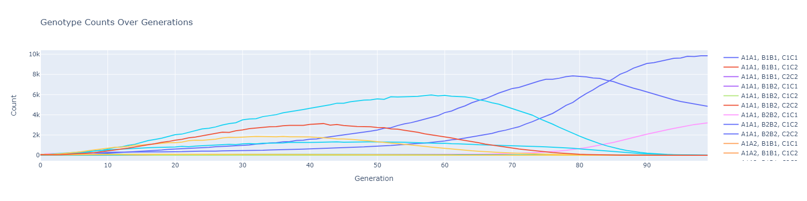

Population Genetics Simulator
| Description |
For more information, see the GitHub repository The PopGen class simulates population genetics over multiple generations. It models the evolution of genotype data based on various evolutionary forces such as fitness, drift, mutation, etc. The class includes methods for running simulations, generating genotype data, and visualizing the results. The latter includes functionality to plot various aspects of the simulation, including genotype counts, allele frequencies, population sizes, and effective population sizes. This simulator provides a practical approach for dealing with complex equations and systems where analytical solutions are challenging or impossible. Simulators are widely used when traditional equations grow exponentially more complicated as we add additional factors. For example, to calculate the genotype frequencies for one locus with two alleles A and B, we can use the simplest case of the Hardy–Weinberg model, which states that allele and genotype frequencies in a population will remain constant from generation to generation in the absence of other evolutionary influences. Under these conditions, we can use the following equations where p and q are the frequencies of alleles A and B, respectively.
A more generalizable model with any number of loci and any number of alleles involves multiplying the allele frequencies for each locus, considering all possible combinations of alleles across loci. For n loci, where each locus i has alleles Ai1, Ai2, ... , Aik with frequencies pi1, pi2, ... , pik, the genotype frequency for a specific genotype combination (e.g., A1A2 ... Anm) is:
where freq(Ai) is the allele frequency of each allele in the combination, and the product is taken over all loci and alleles involved in the genotype. This approach accounts for both homozygous and heterozygous genotypes and assumes independent assortment of loci. Along with multiple loci and multiple alleles, this simulation incorporates several other elements which makes calculating via equation unrealistic: |
| Relative Fitness: |
The relative fitness of each genotype affects the population's likelihood to successfully reproduce. This can be calculated by modifying the Hardy–Weinberg model. For one locus with two alleles A and B, WN is the weighted average fitness of the population and Wgenotype is the weighted average fitness of that genotype.
Fitness is additionally impacted by epistasis and pleiotropy. Epistasis refers to the interaction between genes at different loci, where one locus can affect the expression of another. Pleiotropy occurs when one gene influences two or more seemingly unrelated phenotypic traits. Such a gene that exhibits multiple phenotypic expression is called a pleiotropic gene. The non-independence and multiple phenotypic expression of genes means that calculating next-generation genotype frequencies can't simply rely on multiplying probabilities for each locus. Instead, we must account for how alleles at different loci influence each other and how loci influence multiple elements contributing to the relative fitness. |
| Recombination and Linkage: |
In multiple loci systems, linkage disequilibrium and recombination between loci that are linked on the same chromosome can affect the inheritance patterns and disrupt the simple inheritance of individual loci. Additionally, relative recombination rates between each pair of loci add additional complexity to the calculation because we have to factor in crossover events during gamete formation. |
| Mating Patterns: |
Non-random mating patterns, such as covariance, assortative, or disassortative mating, change the expected genotype frequencies from those under Hardy–Weinberg conditions. For multiple loci and multiple alleles, these patterns become more complex to calculate because they affect the inheritance of alleles differently at each locus. |
| Growth Rate and Carrying Capacity: |
Growth rate determines how quickly a population expands. Higher growth rates can shift allele frequencies faster, and population dynamics such as overcrowding or scarcity can create selection pressures that impact genotype frequencies. Carrying capacity refers to the maximum population size an environment can support. When populations approach carrying capacity, competition for resources increases, creating selective pressure. This can affect which genotypes survive and reproduce, altering allele frequencies. |
| Genetic Drift: |
Genetic drift is the random fluctuation of allele frequencies in small populations, which can cause some alleles to become fixed or lost entirely by chance. The effect of drift is inversely related to population size, so in small populations, this can have a significant impact on the next generation’s genotype frequencies. |
| Mutation: |
Mutation introduces new alleles into the population, potentially increasing the number of alleles at a locus. Mutation can be beneficial, neutral, or deleterious, and the rate of mutation affects the genetic diversity in the population. For multi-locus systems, mutations can occur at any locus, but the likelihood that a zygote will have a mutated genotype is dependent on the mutation rate and the genetic distance from the genotype it would normally have. |
| Bottlenecks: |
Bottlenecks occur when a population experiences a sharp reduction in size, typically due to environmental events or other catastrophic events. This can drastically reduce genetic diversity and alter allele frequencies, causing a non-representative sample of alleles to survive and reproduce. After a bottleneck, the genotype frequencies may no longer reflect the original population, and recovering genetic diversity post-bottleneck introduces additional complexity in predicting future generations. |